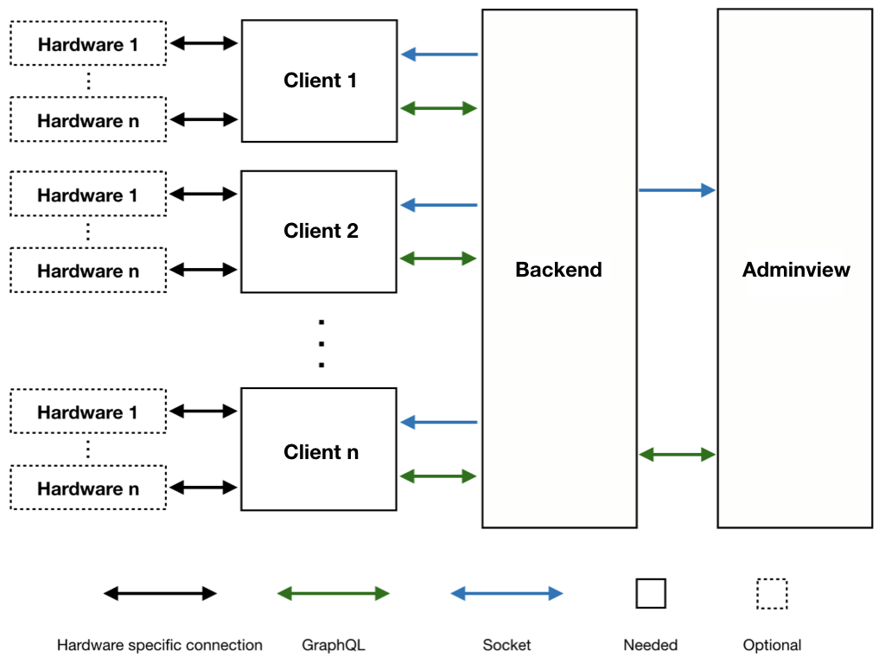

The image below visualizes the architecture and all of it's important components. Each of these components, as well as the most important entities, will be explained and discussed in the following sections of this document.
In addition, all entities are listet in the API-documentation and explained in much more detail.

The adminview represents the administration UI for creating and managing surveys. Here, users can see all of their surveys, domains and client.
The backend takes the role of user management, as well as the management of surveys, domains and clients. Appart from data management, it provides message distribution when entities get updated and a shared storage if clients need to communicate among themselves. Lastly it handles all the authorization / authentication and other logic, like:
The hardware is an optional component that is always connected to a client. It represents additional hardware that is used to enhance voting, like hardware-buttons, slider or additional displays. Most of the time, these are used in addition to microcontrollers, which interpret their signals, generate valid answers and communicate with the backend.
A survey is an entity inside of the backend. It represents a poll and is created by a user in the adminview. Inside of a survey, there can be questions of different types, which need to be answered by a participant. Before a survey can be voted on, it needs to be assigned to at least one domain, so that clients, which are connected to that domain, are allowed to display and answer it.
A domain is an entity inside of the backend. It is created by a user inside of the adminview and represents a location or institution, where a survey can be carried out. Beside surveys, the domain owner can also assign other owners to a domain, which are now allowed to manage it as well. In addition, clients can connect to a domain, to see and answer the assigned survey. All in all, a domain can be seen as a nodal point, where different clients are allowed to answer one survey and might also work together to do so. To allow some kind of communication between connected clients, a domain provides a shared key-value storage, each of these clients can write to and read from.
Domains have a unique identifier which clients need to know, to build up a connection. Domains can also be named, to enable a recognition in the adminview. Domains can be private or public. If they are public, they can be found by any client (without knowing their identifiers), otherwise the client needs to know the identifier beforehand, which can be looked up inside of the adminview.
A client is a device, that is supposed to answer a survey. For this to happen, it needs to connect itself to a domain, the targeted survey is assigned to.
There are two types of clients. Permanent clients are, as the name suggests, permanently kept in the backend, until they get deleted manually by themselves or one of their owners. They should be used in locations, where a lot of people need to make use of one device to vote (one after each other), like shopping malls or educational institutions. Like domains, multiple owners can be assigned to it.
The second type of clients are temporary clients. These are supposed to answer just one survey and are deleted immediately after. They also have a time limit. If this time limit is reached before answering all questions, they are automatically deleted, as well as all of their answers given to that point.
Clients are diverse and not only supposed to display surveys or create votes (even though this is their most important task). Especially permanent clients have many use cases. Some examples for clients would be:
(some of these compositions are explained in detail in chapter [[Example compositions|Examples]] and some are already implemented to show how it is done, see client example)
A question is an entity inside of the backend. It is created by a user inside of the adminview and always a part of a survey. Questions can be of various types which have partly different attributes, such as:
Because of these different types of questions and the different attributes that are needed to represent them, it is favorable to use an '...on type'-differentiation on every question query. This should be done as follows:
Questions {
id
type
value
description
items { ... } # Whatever item-attributes are needed
... on LikeQuestion {
likeIcon {
url
data { ... } # Whatever image-attributes are needed
}
}
... on LikeDislikeQuestion {
likeIcon {
url
data { ... } # Whatever image-attributes are needed
}
dislikeIcon {
url
data { ... } # Whatever image-attributes are needed
}
}
... on ChoiceQuestion {
choices { ... } # Whatever choice-attributes are needed
default
}
... on RegulatorQuestion {
labels { ... } # Whatever label-attributes are needed
stepSize
min
max
default
}
}
(nested attributes are only signalized by a triple dot, but the schema should be clear and intelligible)
The questions of type FAVORITE and RANKING don't need any other attributes than items, because these are their answer possibility and not only an instrument for visual feedback.
(more information about questions and their nested entities like items, choices or labels can be picked up from the API-documentation)
The differentiation of types is also needed when requesting answers / votes.
An answer is an entity, created by a client and always connected to a single question. Just like questions, answers are of various types. Every question type has a corresponding answer type, so that the attributes provided in an answer depend on stated types. To give a neutral answer, the attribute needs to be filled with 'null'. After creating an answer it is enhanced by the identifier of the corresponding question and cached in the backend, until a client gave the answers to all questions of a survey. Then they will be persisted as a vote and the participant is finished.
A vote is an entity that is created by the backend when all answers for a survey were collected by a single client / participant. It contains all the answer-objects, as well as the identifiers of the voting client and its domain (and a timestamp). This way, later evaluations can separate the votes by domains or clients and have richer insights (they could potentially find out, that the answers of different location vary pretty much).
A vote always belongs to a specific version of a survey. Versions are created when there are already votes for a survey and the creator updates the survey and its sub resources. This could lead to invalid answers, so that a new version is created, which saves the state of the votes and questions before the update. This way the answers are always valid in their context and the different versions of a survey can be compared.
(more concerning results, versions and votes is documented in the API-documentation)